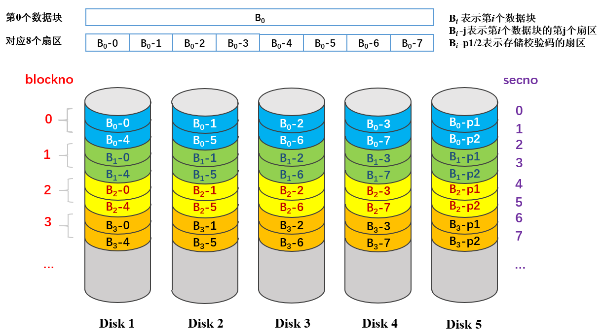
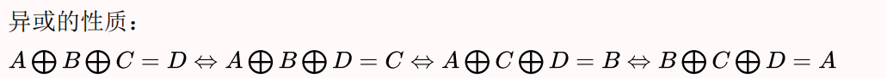

题目描述
请你实现一个类RAID4的磁盘阵列，在保留MOS操作系统原有功能的同时，实现对磁盘阵列的读取、写入操作，并在磁盘发生损坏时能够尝试进行数据恢复。
类RAID4磁盘阵列介绍
设有n+1个磁盘。
在RAID4中，数据以块为单位分布在各个磁盘上。其中前n块磁盘存储数据，第n+1块磁盘存储其余n个磁盘同级数据块（同级：不同磁盘的同一柱面、同一扇区）的奇偶校验码。
基于MOS文件系统的特点和评测的方便，我们在RAID4的基础上进行修改，产生类RAID4磁盘阵列
在类RAID4磁盘阵列中，数据以扇区为单位分布在各个磁盘上。为了与MOS操作系统“1个块包含8个扇区”对齐，我们将n定义为4（即共5个磁盘）。这样对于每个数据块（大小BY2PG），它的数据以及校验码恰好可以放在5个磁盘的2个同级扇区内。如图所示：

本磁盘阵列中，校验码采用异或校验，由其他磁盘的同级扇区异或得到（ $S_5 = S_1\bigoplus S_2\bigoplus S_3 \bigoplus S_4$，其中 $S_i$ 表示第i个磁盘上的扇区）。得益于异或的性质，
当一个磁盘发生损坏时，可以由其他磁盘的数据计算得到该磁盘的数据。而在测试中，我们将通过不挂载特定磁盘来模拟磁盘的损坏。

请你实现相关函数，能够查看磁盘是否损坏，实现对磁盘阵列数据的读取和写入，保证在损坏磁盘个数不超过1个时磁盘的正常读取和写入。
具体需要实现的函数如下：
磁盘状态检查函数raid4_valid
函数原型： int raid4_valid(u_int diskno)
函数描述：判断磁盘ID为 diskno 的磁盘是否有效。
在 ide_read 和 ide_write 中，对磁盘执行一次读写操作后，会获取读写操作的状态 status ，如果为0，表示读写存在异常。在本实验中，理论上只会出现未挂载磁盘导致的异常，因此可以通过该状态判断磁盘是否有效。
参考步骤：参考 ide_read ，使用系统调用，选择磁盘ID、指定磁盘读取偏移量为0、执行磁盘读取操作、获取上一次操作的状态，此时得到的状态可以判断磁盘的有效性。
返回值：磁盘有效时（磁盘已挂载）返回1，无效时（磁盘未挂载）返回0。
如果磁盘ID对应的磁盘不存在， gxemul 会在屏幕上输出错误信息 [diskimage_access():ERROR: trying to access a non-existant IDE diskimage (id x) ，这是正常现象，不会导致系统崩溃。
磁盘阵列写入函数raid4_write
函数原型： int raid4_write(u_int blockno, void *src)
函数描述：将 src ~ src + BY2PG 的数据写入到5个磁盘组成的磁盘阵列中，其中数据写入1~4号磁盘的相应扇区，计算得到的校验码写入5号磁盘的相应扇区。
磁盘损坏情况：
- 无磁盘损坏：将数据和校验码写入对应磁盘扇区，返回0。
- 有磁盘损坏：将数据和校验码写入对应磁盘扇区，如果对应磁盘无效，则不写该磁盘，其余磁盘按其该写入的内容照常写入。返回值为磁盘损坏个数。
你可以使用 ide_write 和 raid4_valid 来简化部分操作。
磁盘阵列读取函数raid4_read
函数原型： int raid4_read(u_int blockno, void *dst)
函数描述：从5个磁盘组成的磁盘阵列中读取一个数据块大小（BY2PG）的数据到目标空间 dst ~dst + BY2PG 。 blockno 为数据块序号，与各个磁盘的扇区号从0开始建立对应关系，即数据块 blockno 对应的磁盘阵列每个磁盘的扇区号为 [2 blockno, 2 blockno + 1] ，如上方介绍中的图。
磁盘损坏情况：
- 无磁盘损坏：将数据读取到目标空间，读取的同时计算校验码。如果校验码正确，返回0；反之，返回-1。
- 1块磁盘损坏：如果校验码所在磁盘（即5号磁盘）损坏，则拷贝数据到目标空间；如果数据所在磁盘损坏，则通过校验码计算出损坏数据，拷贝完整的数据到目标空间。返回值均为1。
- 多块磁盘损坏：返回值为磁盘损坏个数，除此之外不需要读取扇区数据。
你可以使用 ide_read 和 raid4_valid 来简化部分操作。
可能的思路
1 | void user_bxor(const void *src, void *dst) { //实现计算奇偶校验码 |
This is copyright.